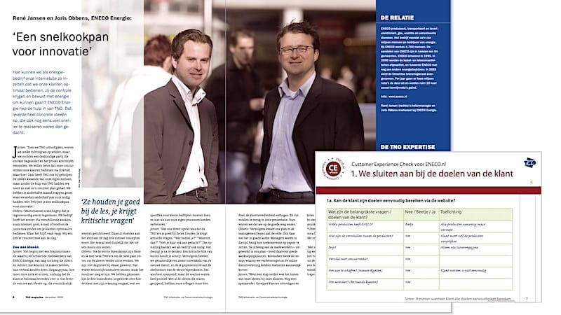
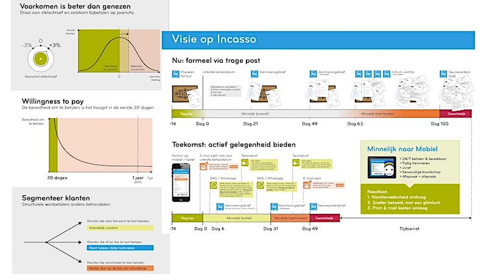
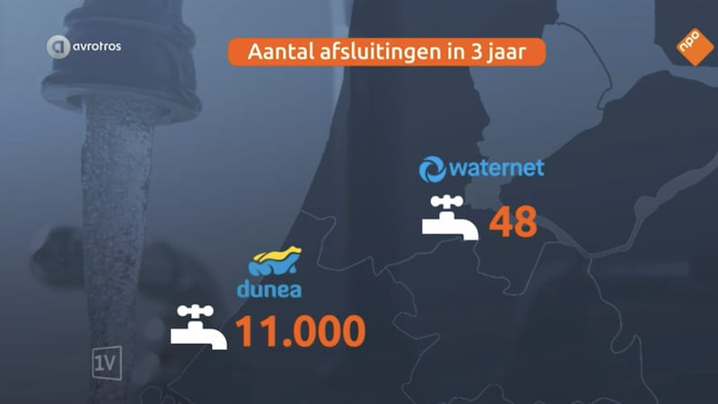
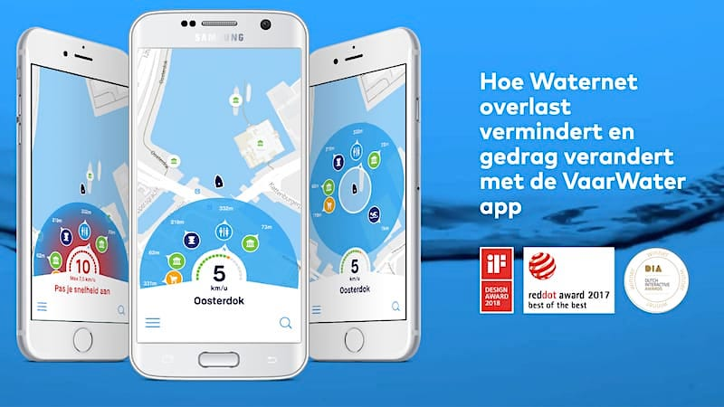

<div class="port-holder">
	<div class="row">
		<!-- Project Close Button -->
		<div class="col-md-12">	
			<ul class="pclose">
				<li>
					<a id="portfolio-close" href="#" title="Close Project">
						<i class="fa fa-times-circle-o"></i>
					</a>
				</li>
			</ul>	          	
		</div>
		<!--/Project Close Button -->
		<!-- Project Title -->
			<div class="project-title">	
				<h1>Customer Experience</h1>
				<p>Klantervaring / Awards</p>
			</div>
		<!-- /Project Title end-->

		<!-- Project slider -->
			<div class="row">
				<div></div>
			</div>
		<!-- /Project slider -->		
		<div class="col-md-12">
			<div class="portfolio-media">
	              <div id="project-carousel" class="owl-carousel owl-theme">
					                <div class="item"></div>
					                <div class="item"></div>
					                <div class="item"></div>
					                <div class="item"></div>
	              </div>
			</div>
		</div>
		<!-- /Project slider end-->

		<!-- Project Details -->
			<div class="col-md-12">
				<h2>VERDIENSTELIJKE RESULTATEN</h2>
				<p>Sommige resultaten worden tastbaar, wanneer ze eervol vermeld worden met of zonder award. Mijn innovatieve aanpak bij ENECO Energie viel op bij TNO. Vandaar het interview en artikel in hun magazine. Het nieuwe incassoproces bij Waternet leidde tot minder afsluitingen, lagere kosten en een hoger financieel resultaat. We werden door Gartner genoemd als best-in-class voor de digitale overheid. Mijn overtuiging is dat met de juiste mindset, motivatie en management de prijzen en erkenning vanzelf komen. Overigens, je klant moet de belangrijkste motivatie zijn, niet het binnenhalen van een award. </p>
			</div>
		<!-- /Project Details end -->
	</div>
</div>